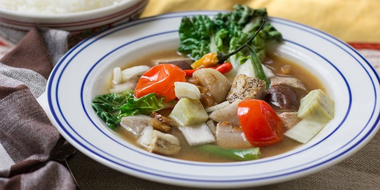

Sinigang

Description
Sinigang is also a Filipino delicacy known for it's unique sourness. Everyone needs to try it.
Ingredients
- 1 tbs vegetable oil
- 1 small onion, chopped
- 1 tbs salt
- 1 piece of fresh ginger, chopped
- 1 lb bone-in pork chops
- 4 cups water
- 1 package tamarind soup base
- Heat vegetable oil in skillet on medium heat.
- Add onion; cook and stir until softened and translucent. Season with salt
- Stir in ginger, tomatoes, and pork chops. Cover and reduce hear to medium. Make sure to turn pork occoianally.
- Pour in water and tamarind soup base. Bring to boil then reduce heat and simmer until pork is tender.
- Serve on top of a bed of rice and enjoy!